Сборка
Этап 1: Сборка базового коптера
Шаг 1. Сборка карбоновой рамы
Используется:
- Центральная пластина верхняя - 1шт;
- Центральная пластина нижняя - 1шт;
- Луч - 4шт;
- Стойка алюминиевая L-35мм - 4шт;
- Винт М3х14 - 4шт;
- Винт М3х18 - 4шт.
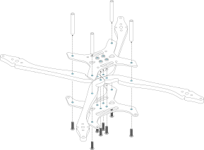
Рис. 1
Соедините детали, как показано на рисунке 1:
в центральных отверстиях используются винты М3х14 - 4шт;
во внешних отверстиях используются винты М3х18 - 4шт.
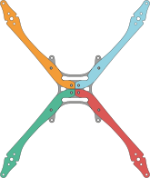
Рис. 2
Подсказка Обратите внимание на расположение выреза детали “Луч”, он должен совпадать с вырезом на деталях” Центральная пластина нижняя” и “Центральная пластина верхняя” как показано на рисунке 2.
Шаг 2. Установка моторов
Используется:
- Карбоновая рама, собранная на шаге 1;
- Мотор - 4шт;
- Винт М3х8 - 8шт.
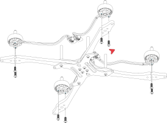
Рис. 3
Установите моторы на лучи, как показано на рисунке 3:
- на данном этапе моторы крепятся на 2 винта М3х8 в боковые отверстия на лучах.
Рис. 4
Подсказка Обратите внимание на расположение фазных проводов и моторов. Во избежание повреждений проводов пропеллерами, моторы и провода необходимо расположить как указано на рисунке 4.
Шаг 3. Установка маунтов шасси
Используется:
- Карбоновая рама с установленными моторами, собранная на шаге 2;
- Маунт шасси - 4шт;
- Проставка маунта шасси - 4шт;
- Винт М3х20 - 8шт.
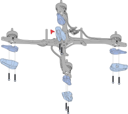
Рис. 5
Установите маунты шасси с помощью 8 винтов М3х20, как показано на рисунке 5.
Шаг 4. Установка полетного контроллера и Регулятора 4в1 (стека)
Иcпользуется:
- Рама с установленными моторами и маунтами шасси, собранная на шаге 3;
- Полетный контроллер - 1шт;
- Регулятор 4в1 - 1шт;
- Стойка нейлоновая HTP-310 - 4шт;
- Cтойка нейлоновая HTS-306 - 4шт;
- Винт М3х5 - 8шт;
- Демпфер для полетного контроллера - 4шт;
- Кабель ESC 4in1 to FC - 1шт.
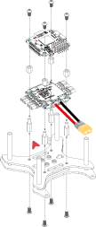
Рис. 6
Установите регулятор 4в1 и полетный контроллер как показано на рисунке 6:
установите 4 винта М3х5 в отверстия детали “Центральная пластина верхняя” снизу-вверх и вкрутите их в 4 стойки HTS-306;
установите регулятор 4в1 на стойки HTS-306. Силовой кабель должен располагаться сзади, относительно направления дрона (красная стрелка);
установите 4 стойки HTP-310 для фиксации регулятора 4в1;
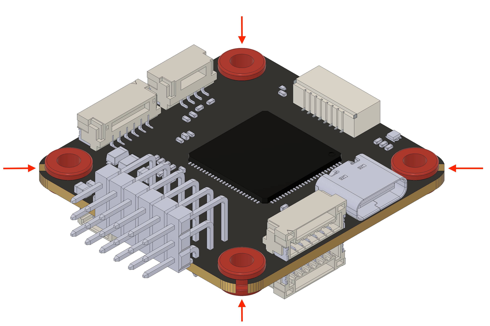
Рис. 7
установите 4 демпфера полетного контроллера в отверстия на полетном контроллере
установите полетный контроллер на стойки HTP-310 (стрелка направления на полетном контроллере должны совпадать с направлением дрона)
зафиксируйте полетный контроллер с помощью 4-х винтов М3х5 , вкрутив их в стойки HTP-310.
Рис. 8
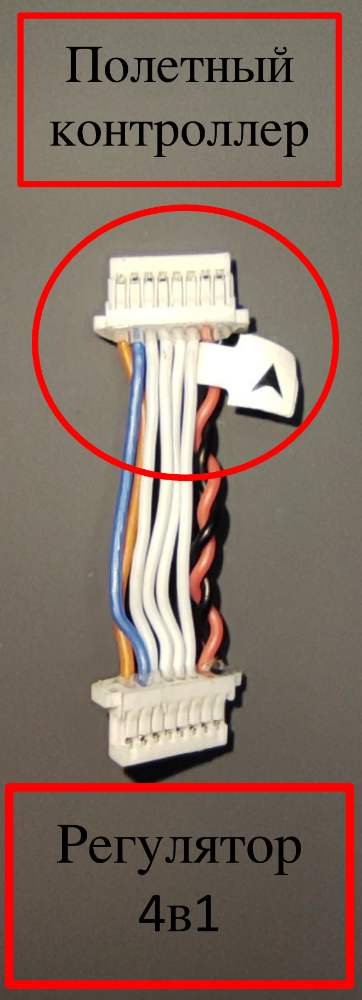
Рис. 8
- Соедините Регулятор 4в1 с полетным контроллером с помощью кабеля “ESC 4in1 to FC”, как показано на рисунке 8
Подсказка Для того чтобы подключить кабель правильно, не перепутав полярности, обратите внимание на стикер со стрелкой и маркировкой “FC”, этой стороной кабель подключается в гнездо полетного контроллера.

Рис. 9
- Подключите фазные провода моторов к регулятору 4в1 (коннекторы MR-30)
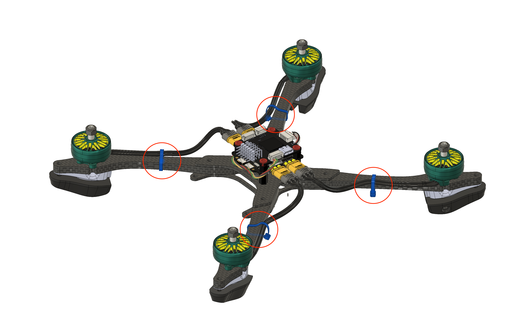
Рис. 10
- Зафиксируйте фазные провода на лучах с помощью пластиковых хомутов ( в центре луча)
Шаг 5. Установка Приемника и Пластины АКБ
Используется:
- Рама с установленными моторами и стеком;
- Приемник - 1 шт;
- Пластина АКБ - 1шт;
- Маунт XT-60 (верх) - 1шт;
- Маунт XT-60 (низ) - 1шт;
- Ремешок для АКБ - 1шт;
- Силиконовая антискользящая наклейка - 1шт;
- Клейкая лента двухсторонняя - 1шт;
- Винт М3х5 - 4шт;
- Винт М3х14 - 2шт.

Рис. 11
Установите приемник на деталь “Центральная пластина верхняя” с помощью клейкой двухсторонней ленты как показано на рисунке 11.
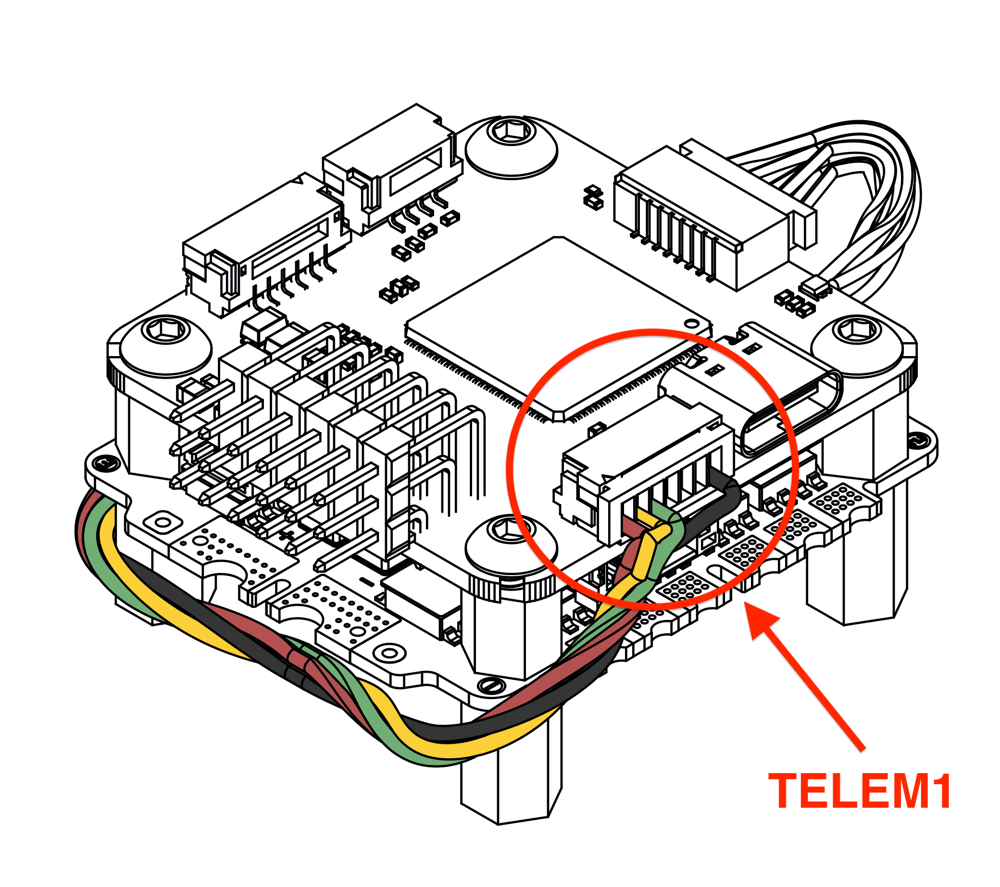
Рис. 12
Подключите приемник в гнездо “TELEM1” на полетном контроллере.
Рис. 13
Приклейте силиконовую антискользящую наклейку на деталь “Пластина АКБ”, как показано на рисунке 13.
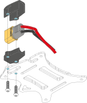
Рис. 14
Зафиксируйте коннектор XT-60 кабеля питания на детали “Пластина АКБ” с помощью Маунта XT-60 и 2 Винтов М3х14.
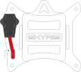
Рис. 15
Проденьте силовые провода в паз на детали “Пластина АКБ”, как показано на рисунке 15.
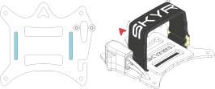
Рис. 16
Проденьте ремешок для АКБ в пазы на детали “Пластина АКБ”, как показано на рисунке 16.
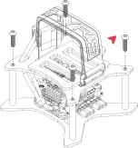
Рис. 17
Установите деталь “Пластина АКБ” на 4 алюминиевые стойки L35мм и зафиксируйте ее с помощью 4 винтов М3х5. (Стрелка на детали “Пластина АКБ” должна совпадать со стрелкой на полетном контроллере и направлением дрона) как показано на рисунке 17.
Шаг 6. Установка шасси
Используется:
- Ножка (мал) - 4шт;
- Винт М3х14 - 4шт.
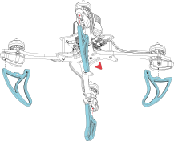
Рис. 18
Установите детали Ножка (мал) 4шт в пазы как показано на рисунке 18.
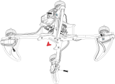
Рис. 19
Установите 4 винта М3х14 в отверстия на деталях “Маунт шасси” для фиксации ножек.
Шаг 7. Установка защиты и пропеллеров
Используется:
- Защита пропеллера - 4шт;
- Перемычка (мал) - 2шт;
- Перемычка (бол) - 2шт;
- Комплект пропеллеров (2CW + 2ССW);
- Гайка М5 - 4шт;
- Винт М3х8 - 8шт (опционально).
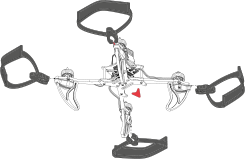
Рис. 20
Установите детали “Защита пропеллера” на лучи, как показано на рисунке 20.
- “Защита пропеллера” вставляется в паз с торца луча с усилием, до щелчка.
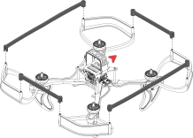
Рис. 21
Установите детали “Перемычка (мал)” и “Перемычка (бол)”, как показано на рисунке 21.
- Перемычки защелкиваются на деталь “Защита пропеллера” с усилием, до щелчка.
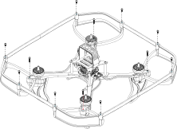
Рис. 22
Дополнительно можно зафиксировать перемычки с помощью винтов М3х8, как показано на рисунке 22 (если требуется увеличить жесткость защиты).
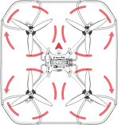
Рис. 23
Установите пропеллеры на моторы ,как показано на рисунке 23:
Передний левый и задний правый моторы вращаются по часовой стрелке (CW)
Передний правый и задний левый моторы вращаются против часовой стрелки (CCW)
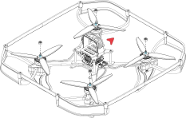
Рис. 24
Зафиксируйте пропеллеры на моторах с помощью 4 гаек М5, как показано на рисунке 24.